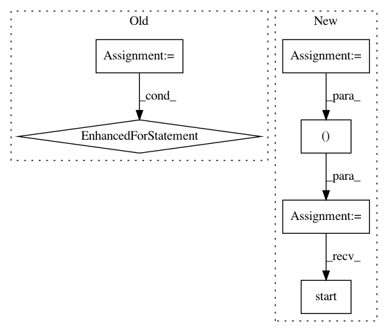

e363904af067de1beac98313c0a6f8362980d406,distributed/tests/test_scheduler.py,,test_service_hosts,#,1138
Before Change
pytest.importorskip("bokeh")
from distributed.bokeh.scheduler import BokehScheduler
for port in [0, ("127.0.0.3", 0)]:
for url, expected in [("tcp://0.0.0.0", ("::", "0.0.0.0")),
("tcp://127.0.0.2", "127.0.0.2"),
("tcp://127.0.0.2:38275", "127.0.0.2")]:
services = {("bokeh", port): BokehScheduler}
s = Scheduler(services=services)
yield s.start(url)
sock = first(s.services["bokeh"].server._http._sockets.values())
if isinstance(port, tuple): // host explicitly overridden
assert sock.getsockname()[0] == port[0]
elif isinstance(expected, tuple):
assert sock.getsockname()[0] in expected
else:
assert sock.getsockname()[0] == expected
yield s.close()
@gen_cluster(client=True, worker_kwargs={"profile_cycle_interval": 100})
def test_profile_metadata(c, s, a, b):
start = time() - 1
futures = c.map(slowinc, range(10), delay=0.05, workers=a.address)
After Change
assert sock.getsockname()[0] == expected
yield s.close()
port = ("127.0.0.1", 0)
for url in ["tcp://0.0.0.0", "tcp://127.0.0.1", "tcp://127.0.0.1:38275"]:
services = {("bokeh", port): BokehScheduler}
s = Scheduler(services=services)
yield s.start(url)
sock = first(s.services["bokeh"].server._http._sockets.values())
assert sock.getsockname()[0] == "127.0.0.1"
yield s.close()
In pattern: SUPERPATTERN
Frequency: 3
Non-data size: 6
Instances
Project Name: dask/distributed
Commit Name: e363904af067de1beac98313c0a6f8362980d406
Time: 2019-04-09
Author: mrocklin@gmail.com
File Name: distributed/tests/test_scheduler.py
Class Name:
Method Name: test_service_hosts
Project Name: okfn-brasil/serenata-de-amor
Commit Name: 67fa4171fffad014ef7f072ef56426e52080fcb5
Time: 2016-11-10
Author: cuducos@gmail.com
File Name: src/fetch_suspicious_places.py
Class Name:
Method Name: search_suspicious_around_companies
Project Name: MaybeShewill-CV/CRNN_Tensorflow
Commit Name: ed66679b71989f55cc25d7adf69e386ad27c2063
Time: 2019-03-22
Author: luoyao@baidu.com
File Name: data_provider/tf_io_pipline_fast_tools.py
Class Name: CrnnFeatureWriter
Method Name: run